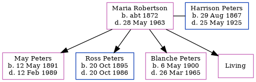

Maria Ellen Peters (née Robertson) c1872 - 1963
[ Home ] | [ Calendar ] | [ Surnames Index ] | [ Errors ] | [ Family History ]Maria Robertson, the wife of Harrison Fletcher Peters (the third cousin twice-removed on the father's side of Nigel Horne), was born in New Westminster, British Columbia, Canada c. 18721,2,3,4 and married Harrison (with whom she had 4 children: May, Ross, Blanche Viola and Marie Jean, along with 1 surviving child) in New Westminster on 24 Jun 18905.
During her life, she was living in Humboldt, Saskatchewan, Canada in 19061 and in 19112; and in Edmonton, Alberta, Canada on 1 Jun 19213.
She died on 28 May 1963 in Vancouver, British Columbia, Canada4.
Children
- May was born on 12 May 1891
- Ross was born on 20 Oct 1895
- Blanche Viola was born on 6 May 1900
Citations
- 1906 Canada Census of Manitoba, Saskatchewan, and Alberta Ancestry.com Operations Inc (Relation to Head of House: Wife; Marital Status: Married)
- 1911 Census of Canada Online publication - Provo, UT, USA: Ancestry.com Operations Inc, 2006. .Original data - Library and Archives Canada. Census of Canada, 1911. Ottawa, Ontario, Canada: Library and Archives Canada, 2007. http://www.collectionscanada.gc.ca/databases/census-19 (Marital Status: Married; Relation to Head of House: Wife)
- 1921 Census of Canada Ancestry.com Operations Inc (Marital Status: Married; Relation to Head of House: Wife)
- British Columbia, Canada, Death Index, 1872-1990 Ancestry.com Operations Inc
- British Columbia, Canada, Marriage Index, 1872-1935 Ancestry.com Operations Inc
Family Tree
Map
Generated by ged2site. Last updated on Jul 3, 2024
Known Issues
No records of living with anyone